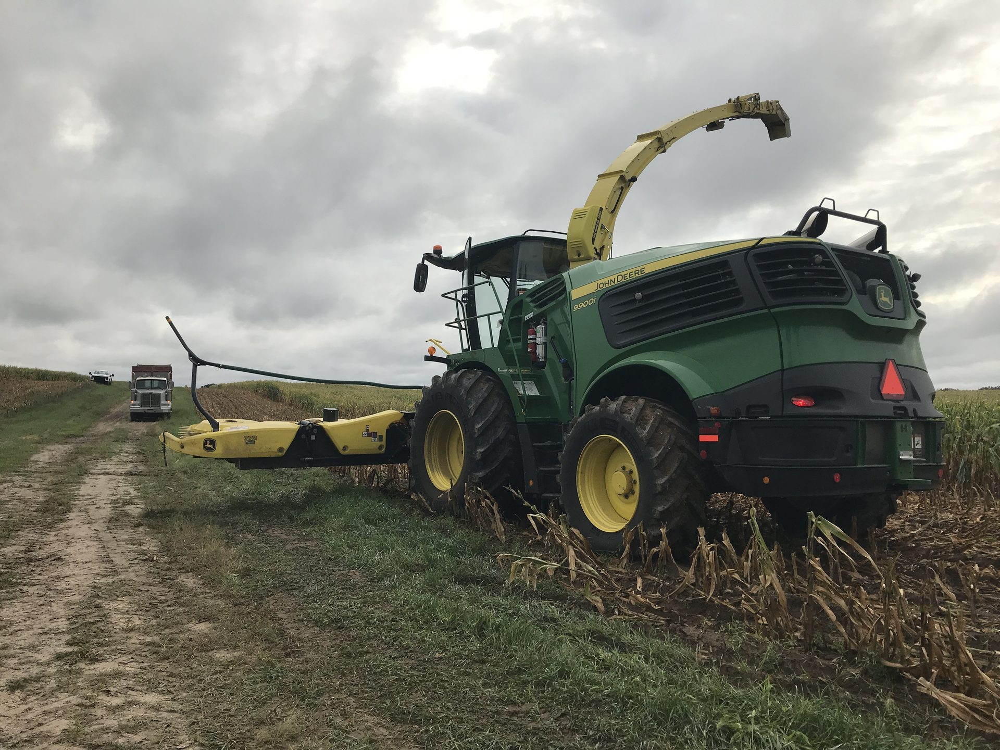
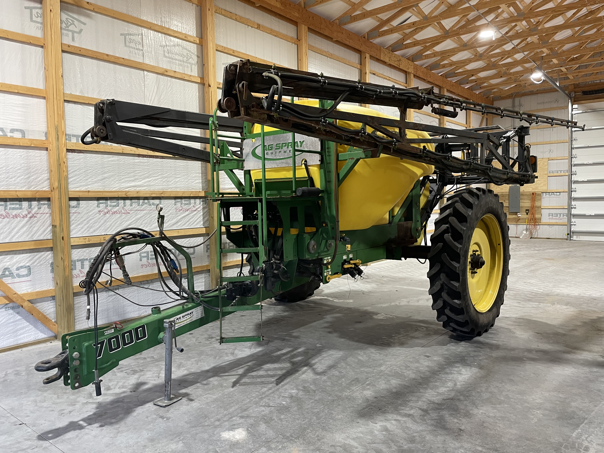
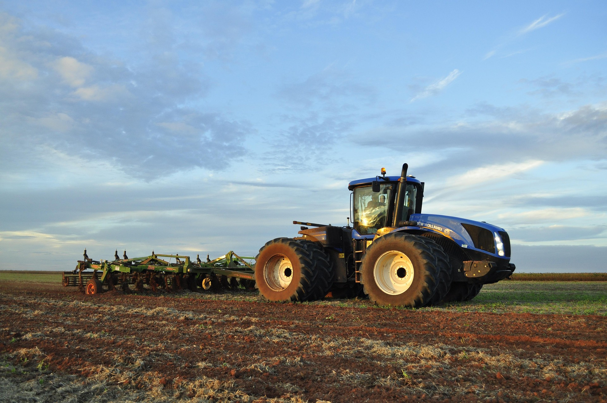
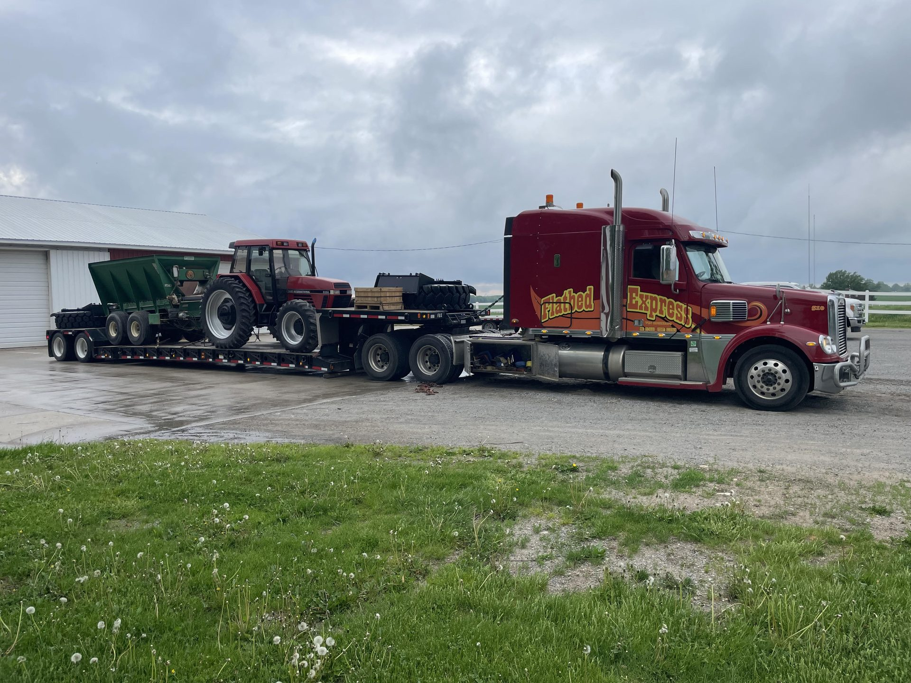

Michigan Agricultural Equipment Sales
Peak Custom Solutions helps Michigan farmers and equipment owners maximize equipment value through professional marketing, strategic sales representation, transportation coordination, and personalized support.
Agricultural Equipment Expertise
Peak Custom Solutions provides agricultural equipment sales representation across Michigan for tractors, combines, sprayers, tillage equipment, planting equipment, transportation equipment, and specialty farm machinery.
We help streamline the sales process through professional marketing, buyer communication, transportation logistics, financing support, and start-to-finish transaction management.

Agricultural Equipment Services
Practical industry experience and personalized service designed to help maximize equipment visibility and value.
Onsite evaluations and market analysis help determine accurate equipment positioning and pricing strategy.
High-quality photography, custom listings, and strategic marketing help maximize exposure.
Trucking and transportation support help simplify logistics for both buyers and sellers.
Financing support and extended warranty options help provide flexible purchasing solutions.
Equipment Categories
Row crop tractors, utility tractors, articulated tractors, and specialty equipment.
Combines, headers, forage equipment, and harvest support machinery.
Self-propelled sprayers, pull-type sprayers, and specialty application equipment.
In The Field







Serving Michigan Farmers
Selling farm equipment in Michigan means competing in a regional market with experienced buyers who know what equipment is worth. Peak Custom Solutions brings the market knowledge, professional marketing, and buyer network to help Michigan farmers get the most from their equipment — without the hassle of managing the process alone.
From initial evaluation and high-quality photography to listing across trusted marketplaces like Machinery Pete, handling buyer inquiries, coordinating trucking, and managing paperwork, we take care of the details so you can focus on your operation.
We work with farmers and equipment owners across West Michigan and surrounding areas, representing tractors, combines, sprayers, tillage equipment, planting equipment, hay and forage equipment, grain handling equipment, and more.
Buyer Support
Peak Custom Solutions works with trusted partners to help buyers access flexible financing and equipment protection options for Michigan agricultural equipment purchases.
Flexible financing options through Finance Scope help qualified buyers secure agricultural equipment purchases with competitive terms.
Explore FinancingMachinery Scope extended warranty coverage provides equipment protection designed specifically for agricultural equipment owners.
Get a QuoteTrucking and equipment transportation coordination help simplify delivery and logistics for both buyers and sellers across Michigan and beyond.
Contact UsLooking To Sell Equipment?
Contact Peak Custom Solutions to discuss agricultural equipment sales, transportation, financing support, and professional marketing services for Michigan farmers and equipment owners.